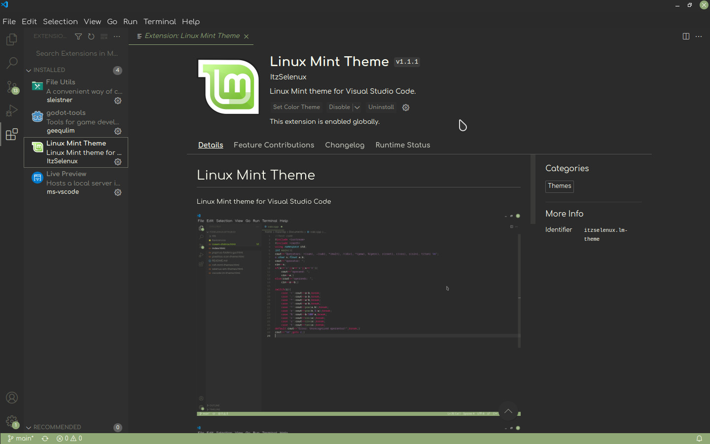

MicroVim
Vim/NeoVim configuration to get Micro editor experience
 Micro at the top, NeoVim at the bottom-left, Vim at the bottom-right
Micro at the top, NeoVim at the bottom-left, Vim at the bottom-right
Installation
VSCode
•Open Visual Studio Code, and search for vscode-lm-theme extension on the Marketplace
•or launch Quick Open (Ctrl+P), paste the following command, and press enter

VSCodium or CodeOSS
open Visual Studio Code, go to extensions, click on 3 dots, and select install from vsix

You can download it from Download Page